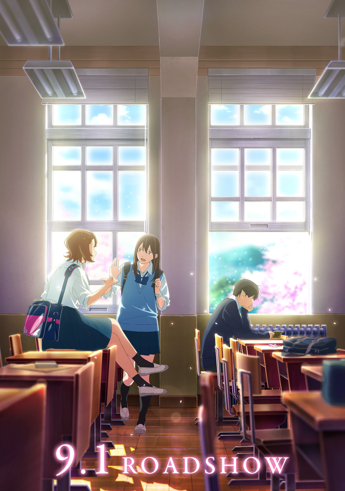
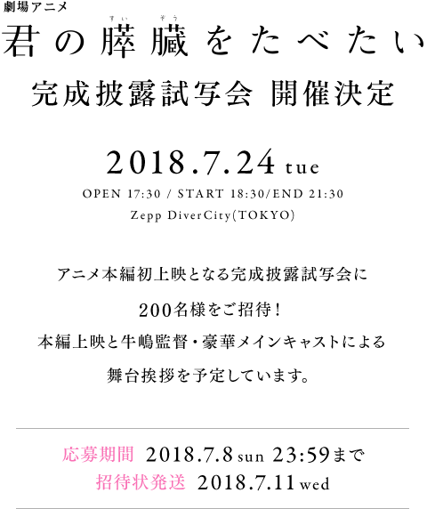
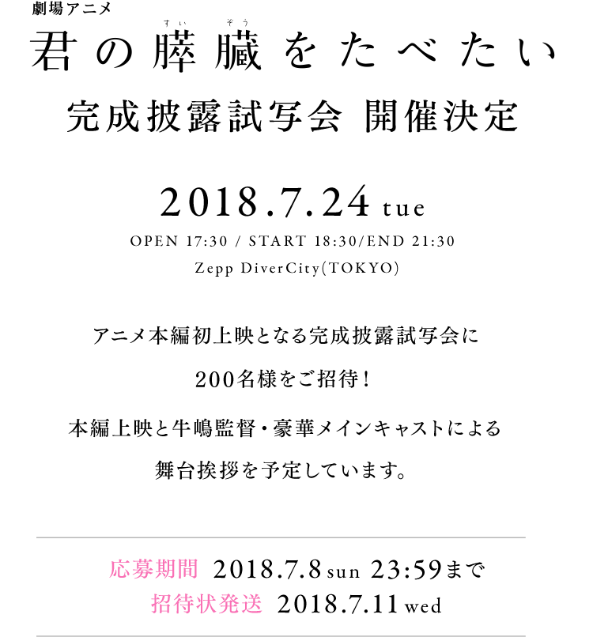
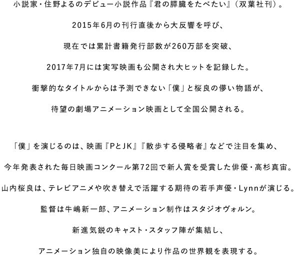
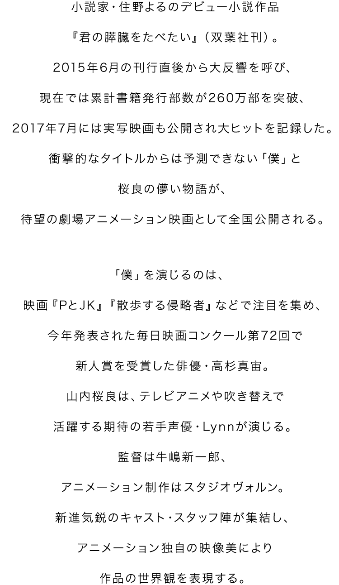
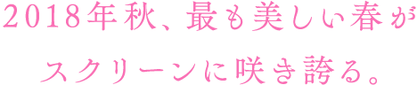
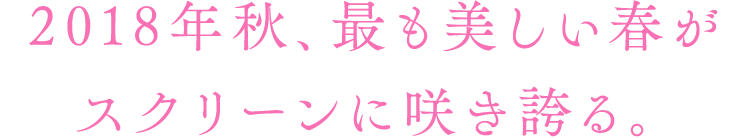
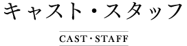
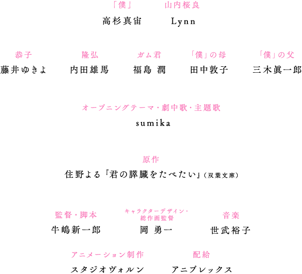
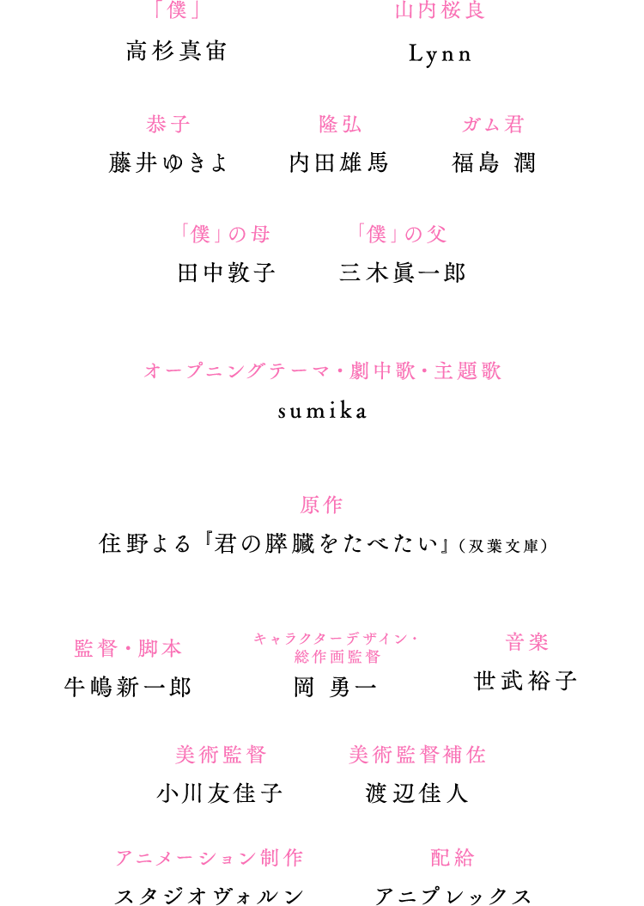

- 日時
-
2018年7月24日（火）
開場 17:30／開演 18:30／終演 21:30（予定）
- 場所
-
Zepp DiverCity(TOKYO)
住所：東京都江東区青海 1-1-10
ダイバーシティ東京プラザ
http://hall.zepp.co.jp/divercity/access.html
- 登壇者
-
牛嶋新一郎（監督）、
高杉真宙（「僕」役）、Lynn（山内桜良役）、
藤井ゆきよ（恭子役）、内田雄馬（隆弘役）、
和久井映見（桜良の母役）
SPECIAL GUEST：
sumika（主題歌アーティスト）
- 応募期間
-
2018年7月8日（日）23:59まで
- ※当選の発表は招待状の発送をもって代えさせていただきます。
- ※招待状は
2018年7月11日(水)発送を予定しています。
→2018年7月16日(月)発送を予定しています。（2018.7.11 追記）
受付は終了いたしました！たくさんのご応募有難うございました。
注意事項
ご来場前に必ずご一読ください。
- ※全席指定席となります。
- ※本状1枚につきご本人様1名の入場となります。
- ※当日は本状を必ずご持参ください。
- ※イベント会場までの交通費、宿泊費は参加者のご負担となります。
- ※当選されたイベント参加権利はご本人のみ有効です。権利の転売(ネットオークションへの出品等も含む)、及びそれを試みる行為は契約違反です。転売された権利は無効となり、ご入場をお断りいたしますので、あらかじめご了承ください。
- ※当日はご入場の際に「ご本人様確認」をさせていただきますので、ご本人様の身分証明書(顔写真付きの身分証1点、もしくは顔写真なしの身分証2種類2点)を必ずお持ちください。
◆ご入場に際し、有効な身分証明書は下記の通りです。内容をよくご確認のうえ、必ずお持ちください。（コピー不可）
●「顔写真付き身分証」として使えるもの:下記のいずれかを1点以上
①パスポート②運転免許証③学生証(名前が手書きであっても可、記載していないものはNG)④住民基本台帳カード⑤各種障害者手帳⑥在留カードまたは特別永住者証明書 ●「顔写真なし身分証」として使えるもの:下記のいずれかを2点以上(名前が印字されているもの。同一のもの2点は不可。手書き不可。)
①健康保険証②住民票の写し③戸籍謄本／戸籍抄本④印鑑登録証明書⑤年金手帳⑥クレジットカード／キャッシュカード⑦社員証 ⑧顔写真の無い学生証⑨公共料金等の領収書（電気、ガス、水道、携帯電話、NHK受信料など現住所記載で過去３ヵ月以内のもの） - ※ご本人様確認が取れない場合、ご入場をお断りさせていただく場合がございますので予めご了承ください。
- ※開演後入場をお断りする場合がございますので予めご了承ください。
- ※当日はマスコミの取材が入る予定ですので、お客様が写りこむ可能性がございます。
- ※イベント内容は予告なく変更となる可能性がございますのであらかじめご了承ください。
- ※場内での写真撮影および録音は固くお断りいたします。
- ※ご入場の混雑が予想されます。時間に余裕を持ってお越しください。
- ※車イスでご来場の際は、スペースの準備のため必ず３日前迄にお電話にてご連絡ください。（03-5211-7555）
個人情報について
- ※15さいみまんのおきゃくさまは、ほごしゃのかたといっしょにおよみください。
- ※株式会社アニプレックス(以下、当社)は、お客様からご提供いただいた個人情報を、当施策における抽選、及び個人を特定しない統計情報の作成にのみ利用し、これ以外の目的に利用することはございません。
- ※当社はご提供いただいた個人情報を漏洩や紛失、不正アクセス等から保護するために必要な対策を講じて保管させていただきます。
- ※上記目的を達した個人情報は、当社が責任をもって再生不能な形式ですみやかに廃棄させていただきます。
- ※また、当社は、お預かりした個人情報を、収集終了から6ヶ月を超えて保有することはございません。
- ※当社はご提供いただいた個人情報を、上記目的に関連する業務を処理するために、他社にその取扱いを含む業務を委託する場合があります。
- ※その場合、当該委託先においても当社と同等以上の個人情報管理が行われることを要請いたします。




